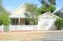

EAMER, Dorothy
-
Name EAMER, Dorothy Born 9 Jan 1923 Perth, Western Australia, Australia 
Gender Female Unique Id EEB1E1FF820043A699E153C2F5B729C00EC2 Died 09 Sep 2010 Perth, Western Australia, Australia Person ID I572 Tree One Last Modified 21 Nov 2010
Father EAMER, John William, b. 1 May 1879, Mount Remarkable, South Australia, Australia , d. 11 Jun 1955, Perth, Western Australia, Australia (Age 76 years) Mother WILLOWS, Lucy, b. 14 Aug 1882, Bendigo, Victoria, Australia , d. 18 Aug 1958, Nedlands, Western Australia, Australia (Age 76 years) Married 31 Jul 1905 Nannine, Western Australia, Australia 
Nannine, Western Australia
Wedding: Nannine, Western Australia - 31st July 1905Family ID F130 Group Sheet | Family Chart
Family MCBEAN, William, b. 30 Aug 1922, d. 04 Jan 2011, Fremantle, Western Australia, Australia (Age 88 years) Married 17 Mar 1945 Perth, Western Australia, Australia 
Me n Sis
Wedding of William McBean and Dorothy EamerChildren 1. MCBEAN, David John, b. 12 Aug 1948 (Age 77 years) 2. MCBEAN, Paul, b. 10 Oct 1952 (Age 73 years) Photos 
27 Glyde Street, Mosman Park, WA
Original home of William and Dorothy McBean ... taken April, 2008Last Modified 24 Oct 2008 Family ID F148 Group Sheet | Family Chart
-
Event Map Born - 9 Jan 1923 - Perth, Western Australia, Australia 
Married - 17 Mar 1945 - Perth, Western Australia, Australia Died - 09 Sep 2010 - Perth, Western Australia, Australia = Link to Google Earth Pin Legend  : Address
: Address
 : Location
: Location
 : City/Town
: City/Town
 : County/Shire
: County/Shire
 : State/Province
: State/Province
 : Country
: Country
 : Not Set
: Not Set
-
Photos Eamer Sister, Dorothy and Lucy Addis Eamer
Wedding of William McBean and Dorothy Eamer
The 'Eamer Girls'
L-R: Jean Eamer (Donohoe) holding John Geoffrey Eamer, Dorothy Eamer, Lucy Addis Eamer and Lucy Eamer (Willows) seated.
Front Row - far left
Taken on 16th Sept, 1966 at Lorraine Lucy Beer's 21st Birthday party.
Eamer siblings
Jack Eamer's 60th Birthday. Taken in backyard of 12 Helena Street, Midland
Bill and I
Taken at their Victoria St. home, April 2008
-
Notes - An short autobiography of Dorothy's life witten 05/11/2005:
I was born in a Maternity hospital at Mount Lawley on 9 January 1923 after my mother had travelled by train from Meekatharra for the event. It would have been quite a journey for my mother at that stage of her pregnancy, with the only luxury being a drink of cold water drawn from a water bag hanging outside the window of her carriage on the train. The object of the trip no doubt was to avoid the heat of the Murchison at that time of the year and to ensure that she and I had the best available medical attention. I think, but I am not sure, that we stayed with my Aunt Carrie in her home at Mount Lawley before going back to Meekatharra.
I didn't live there for long however as in 1926 my father purchased a carrying business in Midland Junction known as McGregor's Transport. The family home and business premises as you know John, were conveniently situated at the corner of Helena and Victoria Streets, and I don't think that my life there would have been very different to the one you enjoyed when you were growing up there at a later date. The main differences would have been due to the Depression which followed our arrival in Midland, and of course the War which subsequently ensued. Money was no doubt tight but I don't remember that presenting too many problems because we always ate well and my parents managed to purchase a residential property in Nedlands in my mother's name at about this time.
I was educated at the State school in Midland and when it came time to leave there my father, after a certain amount of deliberation, decided to invest in my future by financing my further education at City Commercial Business College. My stay there was a success and when I left I obtained a position as a typist and stenographer in the office of Guildford Grammar School which as you know was onlya short distance from home. After a reasonably short stay there I was fortunate enough to obtain a position in the head office of the Midland Railway Company in the railway reserve straight opposite our home in Helena Street.
The things I remember growing up in Midland include the visits we used to get at our back door at home from natives selling clothes props and from gypsies in their exotic outfits on their periodic visits to town. I remember also, playing tennis at Bassendean and going to dances with my sister Lucy and her husband Bill Beer. As well I can remember playing basketball competitively and taking bike rides with friends to places like Rocky Pool at Swan View. In those days you could travel by train straight to South Beach at Fremantle and I can remember day picnics there with school friends and their parents. I also remember visits with my own family to my Aunt Ess's property at Mooliabeenie which were always great fun.
I was never close to my father as Lucy was his favourite daughter, but I was close to my mother. She had her own way of doing things however, one of which was going off on holidays on her own to places as far apart as Albany and Cottesloe. She rarely left us to fend for ourselves and usually arranged for either her mother or her sister Ess to move in and cook for us. I remember another holiday she had, when she and my sister Lucy travelled by ship to New Zealand.
Another lasting memory I have of Midland is of our white cocky which was my father's pride and joy along with the pigeons he raced so successfully. The cocky's party tricks included shouting ""WHAT ARE YOU DOING THERE?"" at innocent passers-by, to their consternation, particularly when it happened at night. Letting air out of the tyres of our trucks with his beak whenever his chain allowed him to get close enough, was another thing he did regularly, calling out that he was ""ALL CHANGLED UP"" whenever his chain got caught. Another thing he did very successfully was to loop-the-loop on the clothes line whilst hanging on to it with his feet. I remember too our little dog Teddy which used to terrorise the local Postman.
Midland was quite an exciting place to be in during the war years. Troops from all over Australia were based there. Most of the work I did at the MR was associated with the transportation of troops and equipment which ensured that I was ""manpowered"" under National Security Regulations. Because of that I was unable to enlist, as I had been minded to do, much to my father's satisfaction.
Dorothy McBean, Nov. 2005
- An short autobiography of Dorothy's life witten 05/11/2005: